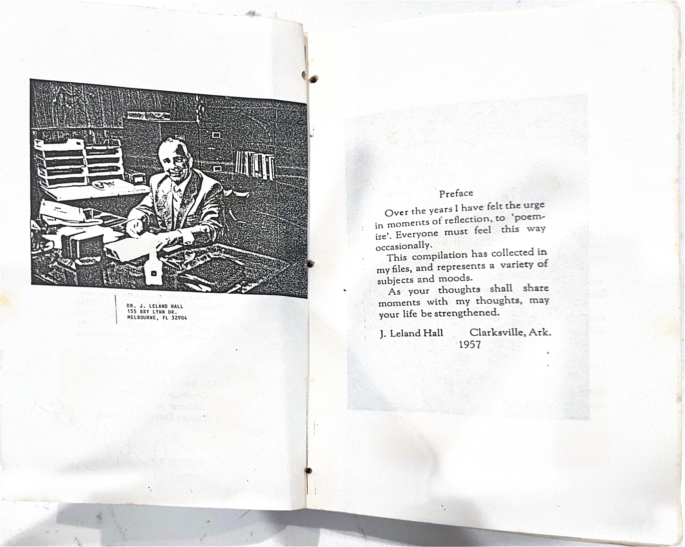

"Over the years I have felt the urge
in moments of reflection, to 'poem-
ize'. Everyone must feel this way
occasionally.
This compilation has collected in
my files, and represents a variety of
subjects and moods.
As your thoughts shall share
moments with my thoughts, may
your life be strengthened."
— J. Leland Hall
Clarksville, Arkansas
1957

From the original collection
About This Archive
This digital archive preserves the poetry of J. Leland Hall, written between 1942 and 1995. The poems were originally collected in hand-typed booklets, photocopied and shared with family and friends.
The collection spans over five decades of verse, touching on themes of faith, family, service, and the quiet moments of reflection that mark a life well-lived.
This website was created to honor his memory and ensure these words continue to be shared with future generations.
197 poems from 124 original pages

Original typescript pages